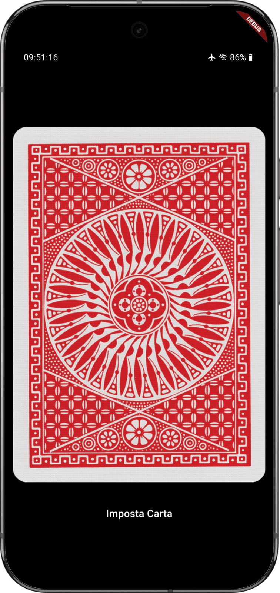

The Mentalist - Mobile Application
Perform mind-reading tricks, psychological illusions, and stunning predictions—all from your phone.
Dart
Flutter
Perform mind-reading tricks, psychological illusions, and stunning predictions—all from your phone.
The Mentalist turns a phone into a secret prop for a classic "any card you name" mentalism routine. On the surface it simply shows a playing card that flips over on tap; underneath is a performer-only control panel with which the magician can silently force any rank and suit.
The design problem was making the secret input channel invisible without making it hard to use in practice: the spectator must never see a menu or a tell, but the magician has to reliably hit one of fifteen zones on a card they are holding, under pressure.
Even the status bar is part of the illusion: it imitates a real phone's indicators, with a live clock and a battery level that quietly changes when the secret mode is armed.
A long press arms the secret mode with no visible change. Tapping one of fifteen regions on the card's own back then sets the rank, and the suit is derived from the seconds on the visible clock at the moment of the tap.
The card itself is a true 3D flip with perspective, so the artwork never appears mirrored.

A single-screen Flutter app. The card flip is drawn with raw matrix transforms rather than an animation package, and a small native Android component adapts the full-screen mode to the device's navigation style.
Implements the entire trick logic: the row/column-to-rank lookup table for the secret grid, the seconds-unit-digit-to-suit mapping, the tap-region math that turns a raw TapDownDetails position into a grid cell, and the state machine coordinating the picker, Secret Mode, and Debug Mode without ever leaking a visible cue.
Drives the 3D flip with hand-built Matrix4/Transform perspective rather than a package, paints the debug grid and tapped-cell highlight with a custom CustomPainter, and uses SystemChrome plus a MethodChannel to lock orientation and immersive full-screen mode across Android's different navigation styles.